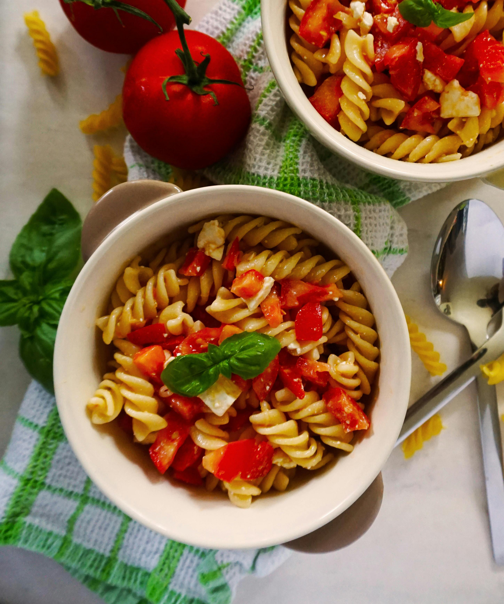

Pasta
Home

Description
This is a recipe, easy to make with just a few ingredients
It is also very quickly to prepare
Ingredients
- Tomatoes
- Spaghetti
- Basil
- 1 Onion
- 2 garlic cloves
- Salt
- Pepper
Steps
- Dice the onion and cut the garlic into small pieces.
- On a heated cooking pot add some oil.
- Once the oil is a bit hot, add the onion and the garlic, and cook them for 7 minutes, also add a bit of salt and pepper.
- While the onion and garlic are cooking, cut the tomatoes into pieces, not too small.
- Add the tomatoes to the cooking pot and move them, let them cook for 10 minutes.
- On another pot add some water and boil it.
- Add the basil leaves to the tomatoes and stir it well.
- Taste it and if it needs more salt or pepper, add them.
- On the boiled water add some salt and put the spaghetti for 10 minutes and the take out the spaghetti.
- Turn off the pot of the tomatoes and mix it with the spaghetti.